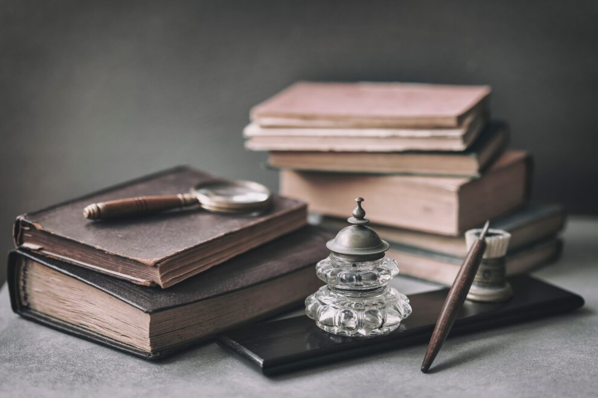
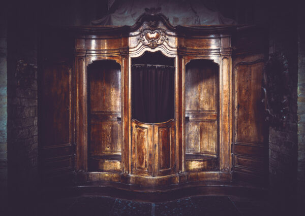
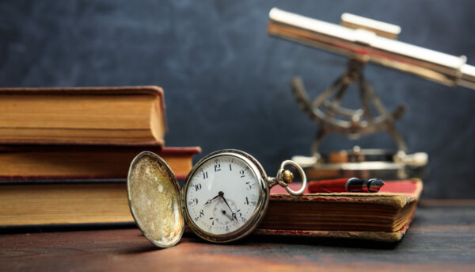

How To Value An Antique : Expert Advice For Valuations
Antiques and antique furniture are great investments for many people. It’s not without risks since the prices for antiques can change depending on their condition and their place in history, but it is possible to evaluate the potential profitability of an antique. Identifying antiques is difficult because they don’t come with tags or packaging, so if you’re looking for something specific, you’ll need to do some research and ask around.
Chances are on the internet you’ll be able to find an expert carriage clock collector, antique doll collector, train collector or antique collector of just about anything who’ll be willing to give you an online estimation.
However, knowing what to look for will help you track down your treasure faster. Here are some tips that will help you tell an antique from a piece of junk.
A Brief History of Antiques
Antiques have a long and storied history dating back to ancient times. They’ve been collected for centuries, used for decoration, and passed down from generation to generation. In the 19th century France, wealthy families would display antiques in their homes during the day and then store them away during the evening. This led to the development of auction houses where people could buy and sell antiques without having to contact each other directly.
Today, there are many different ways that people can value an antique. The most common way is to visit your local antique dealer who will determine the true value of your product as antique dealers specialise in this. The price you pay will depend on how important it is to you.For example, if you are selling an antique, you can offer a price that is best suited to you, but if the person your selling it to wants a lower price, you may have to compromise and negotiate to reach a price you are both willing to stick to.
What Is An Antique?
Old vintage furniture booth in artistic filtered moody style
An antique is an object of historical and cultural value that has survived the test of time. They come in all shapes, sizes, materials, and origins. Antiques are dated based on their age and the era they were made or used in. Some antiques can be dated back as far as the 1500s, they can be objects such as clocks, watches, antique bowls, antique furniture and antique kitchenware. Whatever the object is, antiques have high value because of their age and quality. Also the rarity plays a role in whether something could be considered an antique. As, if you are selling an antique, a buyer will consider whether they can find the same antique object at a more favourable price.
Identifying Antiques
An antique appraisal can be difficult because antique items don’t come with tags or packaging. However, knowing what to look for can help you track down your treasure faster. Here are some tips that will help you tell an antique from a piece of junk.
1. Consider the age of the object. If it’s old, it’s probably an antique! This is mixed with the quality of the craftsmanship and whether the object is in shortage of supply. If the object was made hundreds of years ago, but there’s no shortage of supply, this makes it less valuable. With wooden antiques, there will typically be an engraving on the piece that will indicate the date.
2. Thoroughly examine all sides of the object. Always look for a label on the item. For example if it’s a chair, flip the chair over and look for marks or labels. If it’s a couch, get rid of the cushions and look for a tag/label. Antique art pieces and antique clocks will typically have signatures by the designers or date marks to allow them to be identified.
3. Next, take a close look at whether it seems to be handmade. Signs such as hand stitching, marks from hand tools and a small lack of symmetry are all elements pointing to something being handmade, rather than crafted by a machine. Of course there are still items that are handmade in this modern day and age, but there is a chance this could point to your item being an antique.
4. If you are struggling to identify whether an object is antique by yourself. Then you always have the option of visiting your local antique dealer who will value the item themselves. If your item is big, you can always take pictures and show them to the antique dealer.
The Best Advice for Buying Antiques
Vintage books and pocket watch on a wooden desk
If you’re looking for valuable antique and vintage items, the best advice would be to get your hands on as many pieces as possible. If you have a large collection of antiques, it will give you an idea of how much they should be worth and what features they should have.
Buying antiques from estate sales or auctions is also a good option if you want something specific or if you don’t have the money to buy a large collection at once. You can find some great deals at these types of events because people are often looking to get rid of their collections before the estate sale takes place.
When buying antiques, it’s important to know how old they are and where they come from. Most countries have different laws about antiquities, so if you’re unsure what country an item is from, find out first before purchasing it.
If you’re not sure whether an item is an antique or not, take pictures and do some research online.
Another important thing to remember when buying antiques is that condition makes all the difference in its value. If you’re not sure if an item is in good condition or not, ask around for recommendations before purchasing it. Here at Vintage Clocks, we have expertise in antiques such as clocks and watches and can value any item of your choice using our selling guides.
Average Values Of Common Antiques
Antique Pocket Watch Value
Like most antiques, pocket watches can be extremely valuable, if you get your hands on the right one. But finding the right one can be tricky, due to their smaller detail it can often be more difficult to identify whether or not an antique pocket watch is going to be worth the money
.There are some easy ways of identifying antique pocket watches, start by looking for engravings on the back of the flat surface or on the clock’s face. This should give an identifier of date produced and clock maker.
The average value of a good condition pocket watch is £300
The most expensive pocket watch sold at auction is $24,000,000
Antique Tea Sets Value
Antique tea sets are arguably one of the most aesthetically pleasing antiques due to their iconic and individualistic looks, an antique tea set collector will likely find thousands if not hundred of thousands of different handmade designs.
However, there is one main issue with antique tea sets… They break easily. Due to the fact that most teacups & saucers are made from china the slightest chip to the piece can seriously affect it’s price bracket.
The great thing about antique tea sets is they aren’t that expensive, you could easily fill your collector for less than £1,000. With an average set costing around £100-£200.
The most expensive antique tea set is a 1927 tea infuser by Marianne Brandt, which sold at auction for $361,000 in 2014.
Antique Cameras Value
There’s a very fine line between antique cameras and vintage cameras. There are countless vintage style cameras available online for affordable prices. Offering a rustic feel to picture-taking. However, stumbling upon an antique camera is much more rare, and will definitely cost you a lot more.
Antique Cameras values can range from £700 – £10,000
However, it was an vintage antique camera from the early 1900’s which takes the prize for most expensive antique camera, selling at $15.1 million.
Antique Dolls Value
The great thing about antique dolls is it’s relatively easy to figure out if they’re valuable or not, there’s a few simple steps you can follow to finding out if you antique doll is worth some money
The average value of an antique doll can vary between doll styles and design, as there’s such a variety amongst each individual piece.
On average you may be able to find a good condition antique doll for roughly £100-£200
However, the most expensive antique doll was sold at auction for $6.25 Million, made from more than 2,340 small metal parts this doll is most commonly known as L’Oiseleur (The Bird Trainer)
Antique Carriage Clocks Value
Finding an antique carriage clocks value is one of our specialities here at Vintage Clocks. There are many different factors which can contribute to the overall value of a carriage clock. For example, the condition and age of the clock is arguably the most important factor. Whilst some antique dealers are interested i more recent ‘vintage’ clocks, a large number of antique dealers will not touch a clock they deem to be less than 100 years old.
The clock must also be in full working condition, with it’s original movements and if possible casing in order to reach high value.
There are also historical factors such as it’s era and it’s significance in history which can have an effect on the overall value.
However, the average antique carriage clock will sell from anywhere between £300 – £5,000
The most expensive carriage clock sold at auction was The Duc d’Orleans Breguet Sympthique Clock, at $6.8 million.